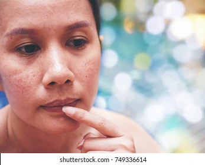

We wanted to share with you some of the wonderful customer reviews we have received over the last 10 years!
You can also read direct feedback on all our products on the individual product pages.
Here we would like to share just a few of our favourite lovely comments with some celebs in there too!
'Conscious Skincare packages all their products in recyclable materials and offer a unique, high quality brand that we feel a perfect match for the excellence of The Royal Ballet.'
The Royal Ballet, London
'Dear Rebecca, just wanted to drop you a line to say thank you for the products. They are beautiful and I particularly like the face oil. It is heavenly and feels really nourishing! Thank you again, Love Melanie xxxx'
Melanie Sykes, TV presenter and Model
‘Conscious Skincare is one of the most impressive brands we’ve come across’
Sustainable Jungle
'Any of Conscious Skincare’s mature range will do the trick for wintry months. They are called moisturisers, but that’s an understatement! They behave like a supersonic balm in my opinion!'
Susan Jane White, Author, Cook and Columnist
'Hi Rebecca, Just a quick line to say that the rejuvenate products are great and haven't caused a reaction. My daughter says it makes my skin look smoother and less tired! I have only been using it just over a week or so - wonderful results. Have a great weekend!
Mandy' Amanda James, Author
'I’m very keen on these amazing products by Conscious Skincare. They not only smell divine, feel gorgeous but have the ingredients that I dream of! No nasties, just pure, thought out, conscious ingredients. I also love the cold pressed oils and the body butters. I’ve been using them a lot recently on my models for shoots and they all comment on how good they feel. I’ll get through the whole range at some point I’m sure but for now they are a winner. Check them out!'
Jules Frances, Professional Make Up Artist. (Jules has worked with clients and celebrities from all over the world, including Colin Firth, Sir Ben Kingsley, Olivia Williams, Tom Hanks and Julie Delpy to name but a few!)
'I appreciate the seriousness and wholesomeness of this brand. I’ve used brands like Dr Hauschka and Weleda for years but am pleased to have found a more local/ UK alternative. I use the Makeup Melt, the Rejuvenate Day Cream and have had samples of the exfoliator and serum. I’m impressed by the high quality ingredients, lovely natural scents from essential oils and plastic-free packaging.'
Thank you! Nathalie (Dorset/ Paris)
'Really good quality, lovely packaging & smells amazing. Speedy delivery.' Becky, England
'Always great and a pleasure to do business with this company. Cream is excellent. I have been using it for years. Thanks.' Jeffrey, USA
'Beautiful gift set! The presentation packaging is really lovely, and the gift box was packaged really securely for the post! I'm very pleased with the item, the shampoo smells delicious! Thank you!' Lydia, England

'Beautiful natural oil. I have been using this in the day and the rosehip one at night and given up on makeup! My skin feels amazing. I love that these are plastic free in their little metal bottles. I sourced them out specifically for that - bonus is that the oil and the company is lovely too. The only thing was, if you're looking for plastic free, they come with a plastic pump too which I wasn't expecting (though in hindsight I think it does say this in the listing) however it is useful and when I re-order I will just request now not to send one in my next order and reuse the ones I have. Product is brilliant, I would highly recommend' Sarah, England
'Purchased this and other items from the range as gifts. They arrived promptly, gift packaging was great, and the products are wonderful.' Julia, England
'The face wash arrived quickly, was well-packaged, and seems to work wonders. It doesn't leave my face feeling oily or stripped. Some face washes leave a weird residue behind but not this one! Hannah, USA
'Bought as a gift that I know the recipient will love. Well packaged & fast shipping. Thank you.' Karen, England